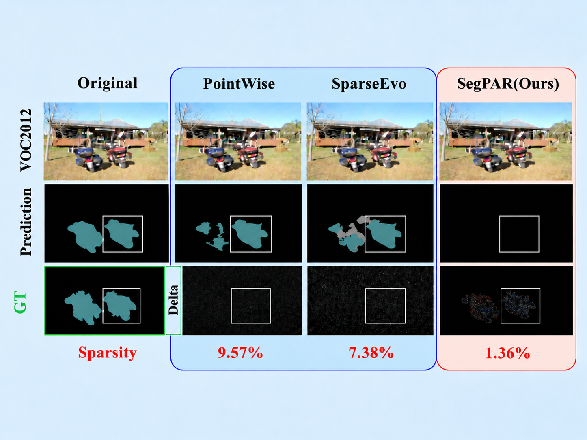
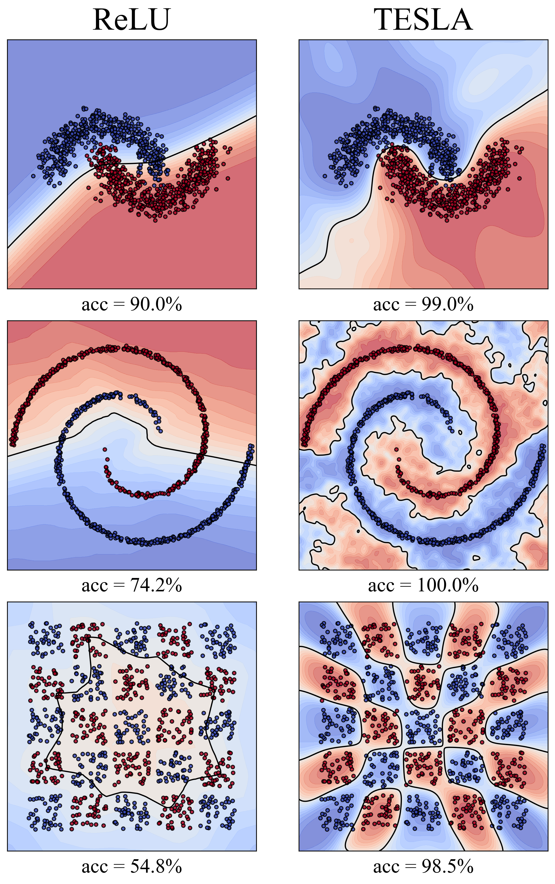
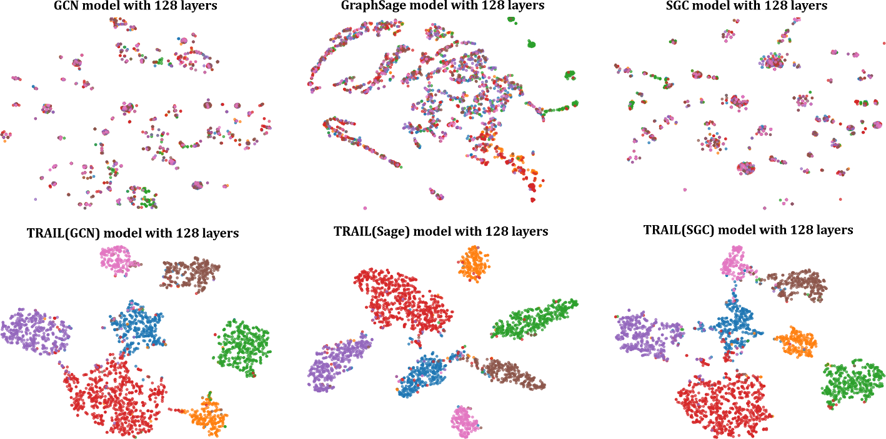
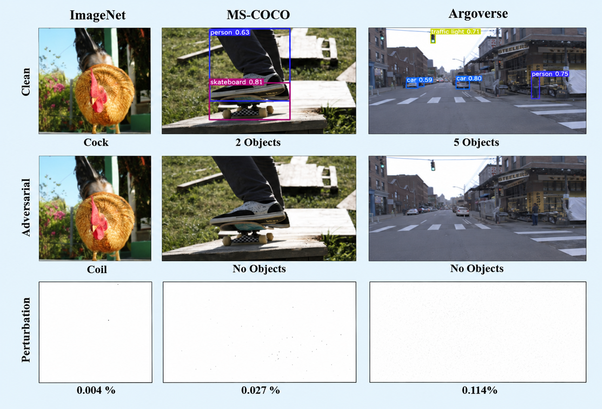
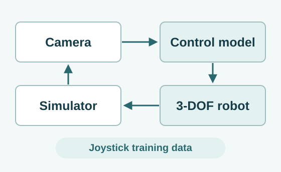
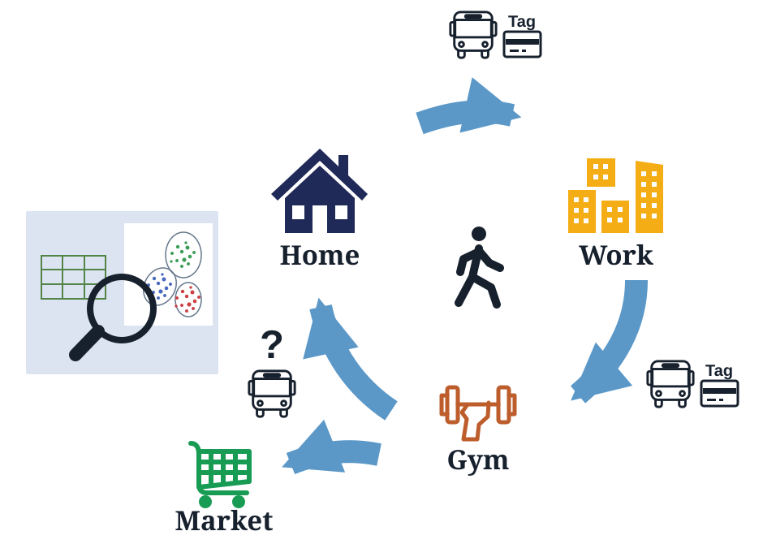

논문
2026
-
Daehwa Ko, JaeHyeon Kim, Oh Seong Kwon, and Jay Hoon Jung. ALPHABET: A Laplace-Pole History Aggregator with Banked Exponential Transport. arXiv preprint arXiv:2608.24051, 2026.
-
배경·날씨 변환 개념 예시 Dongsu Song, DaeYun GO, and Jay Hoon Jung. Discovering Natural Transformation Vulnerabilities in Black-Box Vision Models. arXiv preprint arXiv:2609.07110, 2026.
-

Dongsu Song, DaeYun Go, Boseung Seo, and Jay Hoon Jung. SegPAR: Class-Centric Decision-Based Sparse Attack for Semantic Segmentation. Computer Vision – ECCV 2026, LNCS 17035, pp. 189–206. GitHub
-

Daehwa Ko, JaeHyeon Kim, SeungHyun Ham, and Jay Hoon Jung. TESLA: Taylor Expansion of Sinusoidal Learnable Activations. Proceedings of the 29th International Conference on Artificial Intelligence and Statistics (AISTATS), PMLR 300, pp. 5257–5265, 2026. GitHub
-

Seung Hyun Ham and Jay Hoon Jung. TRAIL: Trajectory-Based Representation and Integration for Limiting Over-Smoothing. Machine Learning, vol. 115, article 64, 2026. 코드 부록 (ZIP)
2024
-

Dongsu Song, Daehwa Ko, and Jay Hoon Jung. Amnesia as a Catalyst for Enhancing Black Box Pixel Attacks in Image Classification and Object Detection. Advances in Neural Information Processing Systems 37 (NeurIPS 2024). GitHub
-

논문 그림 1을 참고한 실험 장치 개요 Van Sy Nguyen, Bohyun Hwang, Byungkyu Kim, and Jay Hoon Jung. An End-to-End Learning-Based Control Signal Prediction for Autonomous Robotic Colonoscopy. IEEE Access, vol. 12, pp. 1280–1290, 2024.
2023
-

첨부 그림을 바탕으로 재구성한 이동 경로 Yousun Shin, Jay Hoon Jung, and YoungMin Kwon. Reconstruction of incomplete public transportation check-out records by heuristic approaching. Cogent Engineering, vol. 10, no. 1, article 2203800, 2023.
2021
-
Jay Hoon Jung and YoungMin Kwon. Boundaries of Single-Class Regions in the Input Space of Piece-Wise Linear Neural Networks. Proceedings of the 25th International Conference on Pattern Recognition (ICPR 2020), pp. 6027–6034, 2021.
-
Jay Hoon Jung and YoungMin Kwon. Color, Edge, and Pixel-wise Explanation of Predictions Based on Interpretable Neural Network Model. Proceedings of the 25th International Conference on Pattern Recognition (ICPR 2020), 2021.
2020
-
Jay Hoon Jung and YoungMin Kwon. A Metric to Compare Pixel-Wise Interpretation Methods for Neural Networks. IEEE Access, vol. 8, pp. 221433–221441, 2020.
2019
-
Jay Hoon Jung and YoungMin Kwon. Robustness of Piece-Wise Linear Neural Network with Feasible Region Approaches. International Conference on Formal Engineering Methods (ICFEM), Doctoral Symposium, LNCS 11852, pp. 507–511, 2019.
-
Jay Hoon Jung, Yousun Shin, and YoungMin Kwon. A Metric to Measure Contribution of Nodes in Neural Networks. IEEE Symposium Series on Computational Intelligence (SSCI), 2019.
-
Jay Hoon Jung, Eunhee Kim, and YoungMin Kwon. Quantitative Model Checking for a Resilient Control System. IEEE Symposium Series on Computational Intelligence (SSCI), 2019.
2018
-
Jay Hoon Jung, Yousun Shin, and YoungMin Kwon. Extension of Convolutional Neural Network with General Image Processing Kernels. IEEE Region 10 Conference (TENCON), 2018.
2011
-
Jay Hoon Jung, T. W. Eom, Y. P. Lee, J. Y. Rhee, and E. H. Cho. Magnetic model for a horse-spleen ferritin with a three-phase core structure. Journal of Magnetism and Magnetic Materials, vol. 323, no. 23, pp. 3077–3080, 2011.
-
Jay Hoon Jung, Y. H. Hyun, S. Y. Park, Y. P. Lee, M. K. Shin, and S. J. Kim. Giant Superparamagnetic Nanocomposites Using Ferritin. Journal of the Korean Physical Society, vol. 58, no. 4, pp. 797–800, 2011.
-
Jay Hoon Jung and Y. P. Lee. Magnetic Characterization of Bio-magnetic Nanoparticles: ferritin. Journal of the Korean Physical Society, vol. 58, no. 4, pp. 966–968, 2011.
2009
-
Darryl Aucoin, Devin Camenares, Xin Zhao, Jay Hoon Jung, Takeshi Sato, and Steven O. Smith. High-resolution 1H MAS RFDR NMR of biological membranes. Journal of Magnetic Resonance, vol. 197, no. 1, pp. 77–86, 2009.